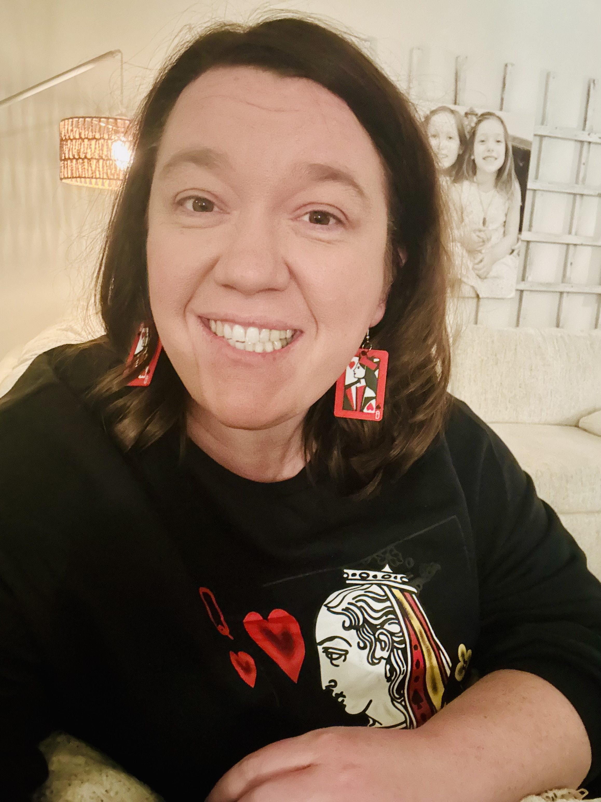

Jake Habegger
With over fifteen years as a dedicated educator, Jake brings a profound understanding of fostering interactive learning environments. His passion for games stems from a lifetime of positive family game experiences.
Jake curates our game library and leads daily operations. His experience as a barista at McGavocks Coffee Bar provides the operational insight needed to manage our food and beverage pop-ups smoothly.

Kate HabeggerA social worker and operations manager with over fifteen years of experience, Kate is committed to connection and inclusivity. Her background has honed her skills in relationship building and empathetic communication.
Kate leads our efforts in human resources, financial oversight, and inventory management. She ensures that every Connect More event is a safe, accepting, and inclusive environment for everyone.
The Next Generation
The official game-testers and joy-bringers of Connect More.

Addy Habegger
Addy ensures every guest feels like a regular the moment they walk in. She's the master of our table waitlist and hospitality.

Emma Kate Habegger
Emma Kate has a keen sense for strategy. She’s your go-to when you need a game recommendation that gets the whole table talking.